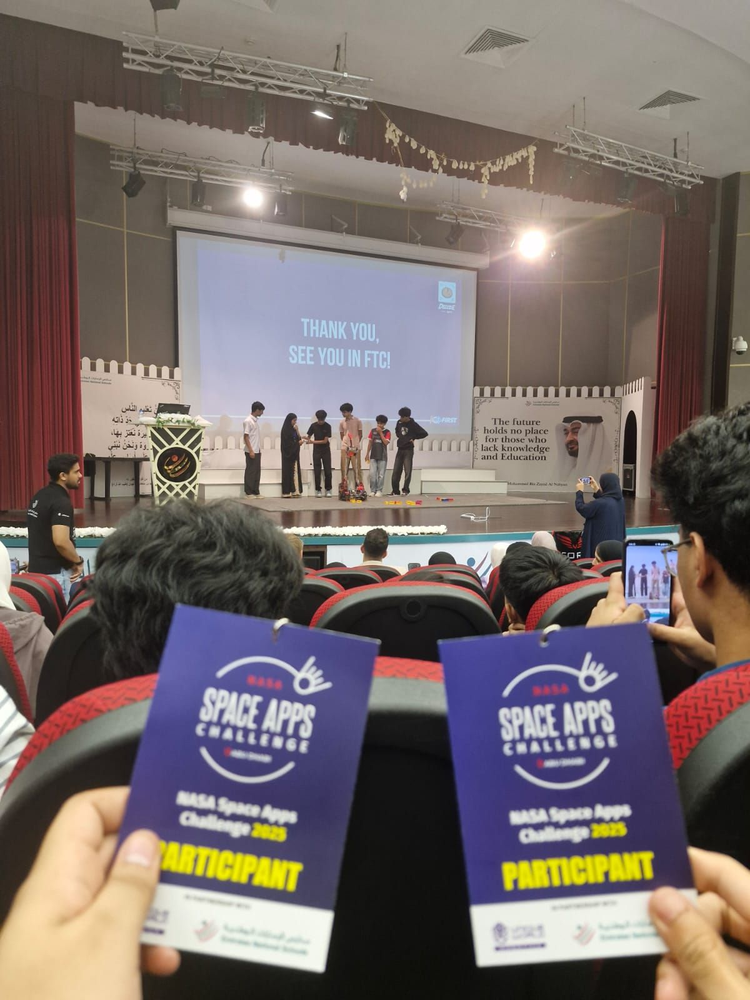
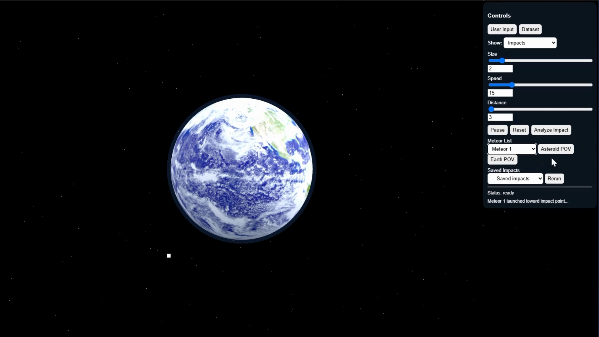

Meteor Impact Simulator
A physics-based simulation developed for the NASA Space Apps Challenge to assess planetary risk.
Video Demonstration
Gallery



Technical Summary
The simulator features a dual-input system: it can process real-time data from NASA's API to model historical meteor events or accept custom user specifications for hypothetical impacts. By analyzing variables like velocity, entry angle, and composition through a Python backend, it generates detailed estimated destruction and casualties.
My Contribution
I drove the UI design direction and strategized the API integration to ensure data flowed seamlessly through the system. I established the project repository to manage team version control and final submission, while also taking an active role in debugging the core logic.